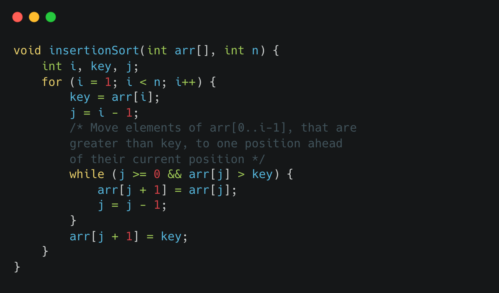

Insertion sort is a simple sorting algorithm that builds the final sorted array one item at a time. It repeatedly selects the next item from the input array, and then insert it into the correct position in the sorted array.
Here's an example of how the insertion sort algorithm works in C:
The outer loop iterates over the entire array, and the inner loop iterates over the sorted portion of the array (the portion of the array that has been sorted so far).
In each pass through the inner loop, the algorithm compares the current element with the elements in the sorted portion of the array and insert it into the correct position.
The time complexity of insertion sort isO(n^2) in the worst and average case, but it is O(n) in the best case when the input array is already sorted. It's efficient on small data sets or nearly sorted data sets.
Insertion sort is a stable sort which means that it preserves the relative order of elements with equal keys. It is also an in-place sort, meaning it doesn't require any extra space.
It's a good choice for small data sets, or when the input data is mostly sorted. It can also be used as a step in other sorting algorithms, such as shell sort.